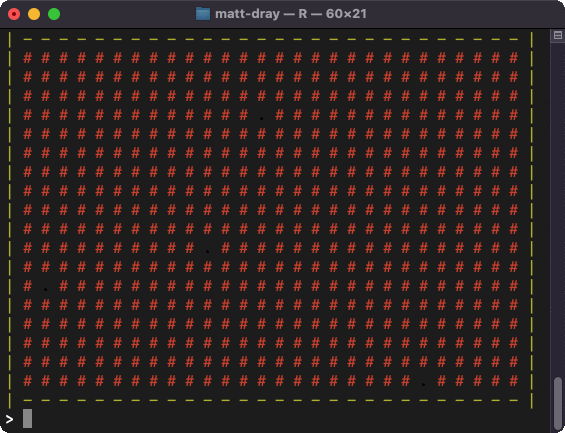
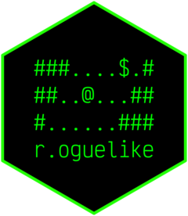
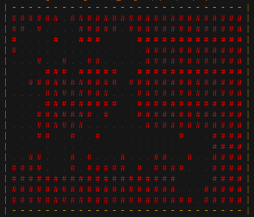
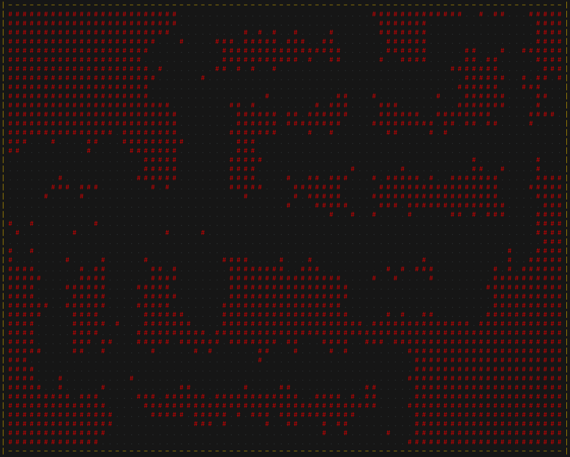
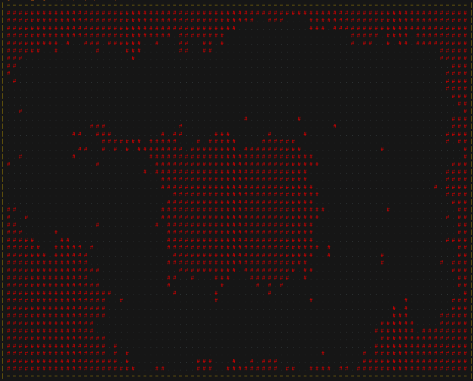
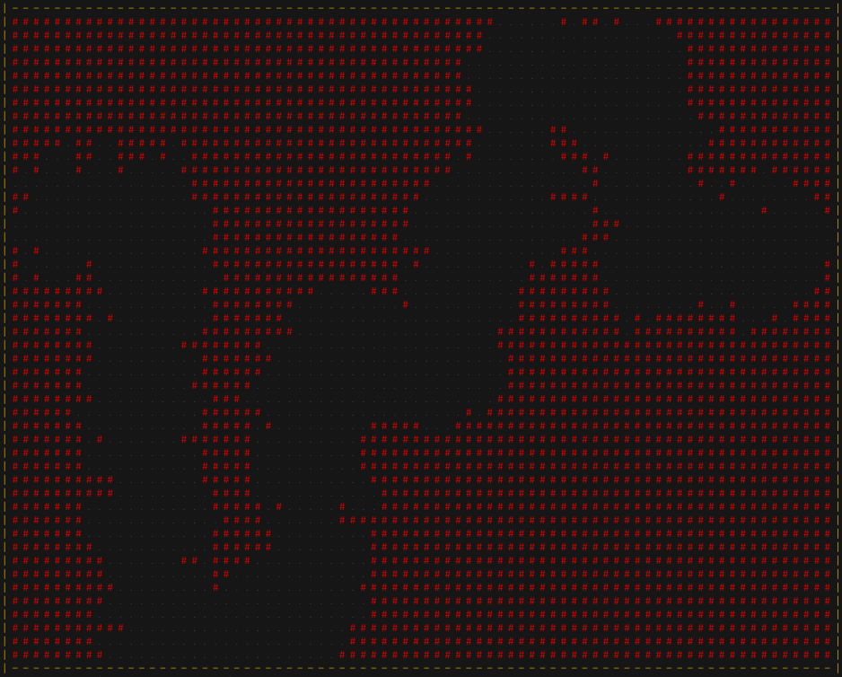
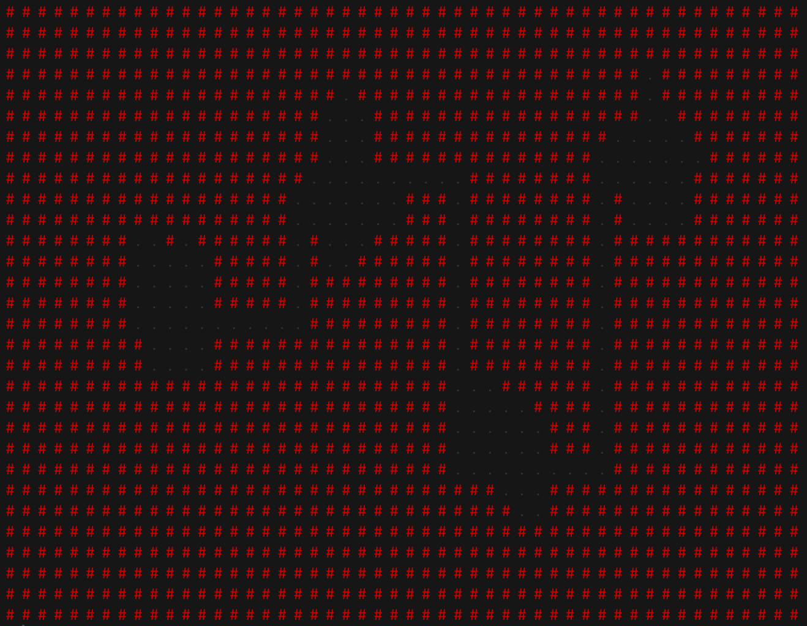
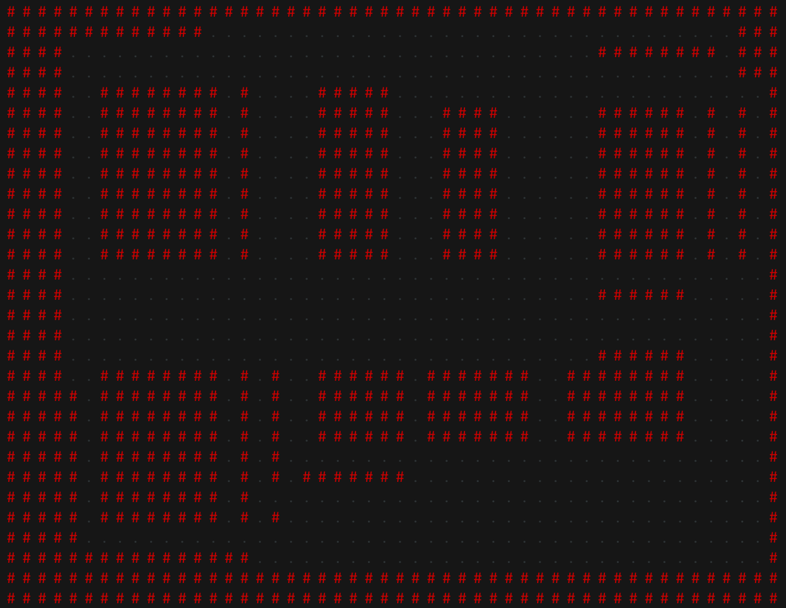

install.packages("remotes") # if not already installed
remotes::install_github("matt-dray/r.oguelike")
tl;dr
I wrote a (very!) basic procedure to generate randomised ASCII-character tile-based dungeons for {r.oguelike}, an in-development roguelike-game-in-a-package for R.
Generate to accumulate
I wrote recently about the {r.oguelike} R package, which contains the beginnings of a roguelike game written entirely in R.

A key element of roguelike games is that the dungeons should be procedurally generated1 so that the player gets a different one each time they play.
There are many algorithmic systems for dungeon creation, like wave function collapse, perlin noise, binary space partitioning, cellular automata, etc.2 See the talk by Herbert Wolverson at Roguelike Celebration, for example.
I plan to take a look at these approaches in future, but I wanted to start with something a bit more… naïve. I just want a simple interconnected space that spawns with randomised rooms, corridors and galleries.
Excavations
Note
The {r.oguelike} package is a work in progress and is developing at pace. Many things explained below may have been superseded or changed by the time you read this.
Install/launch
You can install the (currently work-in-progress) {r.oguelike} package from GitHub, via {remotes}.
You can also launch RStudio in the browser with {r.oguelike} preinstalled, thanks to Binder3 (may take a couple of minutes to load):

Prepare
Before we begin, note that we can talk about generative ‘dungeons’ in the context of connected rooms, like in The Binding of Isaac, or more freeform structures, like world maps in Dwarf Fortress. We’re going for the latter, which amounts to interconnected caverns.
The function we’ll be using is called generate_dungeon(), which prints to the console a cavern that differs each time you run it.4 You can alter the output using the arguments:
iterationsis the number of times to ‘grow’ the cavernsn_rowandn_colgive the map dimensionsn_roomsis the number of rooms to spawnis_snakefor a cavern that is continuous from left to right and wigglyis_organicfor a more freeform vs ‘square’ look to the cavernscolourto print the output in colour
You can always run set.seed() before generate_dungeon() to create the same dungeon every time you run the function with the same parameters.
Demo
So here’s a smallish dungeon with 3 growth iterations for 4 starting rooms, on a map with tile dimensions of 20 rows by 30 columns.
dungeon <- r.oguelike::generate_dungeon(3, 20, 30, 4)Here’s a screenshot of the output so you can see it in colour.

Click for the actual console output.
| - - - - - - - - - - - - - - - - - - - - - - - - - - - - |
| # # # # # # . # # # # # # # # # # # # # # # # # # # # # |
| # # . # . . . . # # # # # . # # # # # # # # # # # # # # |
| # . . . . # . . # # # . . . . # # # # # # # # # # # # # |
| # . . . . . . . . . . . . . . . # # # # # # # # # # # # |
| . . . # . . # . . # # . . . . . # # # # # # # # # # # # |
| . . . . # # # . # # # # # . . # # # # # # # # # # # # # |
| . . # # # # # # # # # # # . # # # # # # # # # # # # # # |
| . . . . # # # # # # # # . . . # # # # # # # # # # # # # |
| . . . . # # # # # # # # # . . # # # # # # # # # # # # # |
| . . . # # # # # # # . # . . . # # # # # # # # # # # # # |
| . . . # # # # # # . . . . . . . # # # # # # # # # # # # |
| . . . # # . . # . . # . . . . . . . . . # . . . # # # # |
| . . . . . . . . . . . . . . . . . . . . . . . . # # # # |
| . . # # . . . # . # . . . # . . . # # . . # . . # # # # |
| # # # # . . . # . # # # # # . # . # # # # . . . # # # # |
| # # # # # # # # # # # # # # # # # # # # . . . . # # # # |
| # # # # # # # # # # # # # # # # # # # # . . . # # # # # |
| # # # # # # # # # # # # # # # # # # # # # # . # # # # # |
| - - - - - - - - - - - - - - - - - - - - - - - - - - - - | So, in this example you can see we have a little cavern with some interconnected areas and a dead-end in the lower right. The tiles represent:
- cavern-floor tiles (black periods), which is where the character can traverse
- cave wall tiles (red hashmarks, which can’t be passed through)
- a boundary around the edge (yellow hyphens and pipe symbols)
Note that the actual output from the function—a matrix that represents the dungeon tiles—is returned invisibly.
Click for a preview of the returned matrix.
# Preview first 10 rows and columns
dungeon[1:10, 1:10][,1] [,2] [,3] [,4] [,5] [,6] [,7] [,8] [,9] [,10]
[1,] "|" "-" "-" "-" "-" "-" "-" "-" "-" "-"
[2,] "|" "#" "#" "#" "#" "#" "#" "." "#" "#"
[3,] "|" "#" "#" "." "#" "." "." "." "." "#"
[4,] "|" "#" "." "." "." "." "#" "." "." "#"
[5,] "|" "#" "." "." "." "." "." "." "." "."
[6,] "|" "." "." "." "#" "." "." "#" "." "."
[7,] "|" "." "." "." "." "#" "#" "#" "." "#"
[8,] "|" "." "." "#" "#" "#" "#" "#" "#" "#"
[9,] "|" "." "." "." "." "#" "#" "#" "#" "#"
[10,] "|" "." "." "." "." "#" "#" "#" "#" "#" More examples
I think this process works best with a larger map grid (i.e. higher n_row and n_col values), more randomly-selected room start-points (higher n_rooms) and more growth steps (higher iterations).
Here’s a larger maze-like dungeon:

This one came out more like a doughnut, with a central ‘pillar’ of rock-wall tiles:

And this one is the result of using is_snake = TRUE, which creates a single, long snaking cavern:

Here’s what happens if we set is_organic = FALSE and is_snake = TRUE. You get much obvious ‘rooms’ connected by small corridors:

And if we set is_organic = FALSE and is_snake = FALSE we get something interconnected, but looks more ‘artificial’ or manmade with its mostly square walls:

You can see how the shape of these dungeons can be used as part of the storytelling. Is the player in a big cavern, hollowed out long ago by natural processes? Or perhaps in an underground city, chiselled-out by dwarves?
Proceed the procedure
What’s the actual process for generating these maps? The procedure is very simple: lay a map made entirely of wall tiles; select random sites for rooms5 and replace with floor tiles; connect them with floor-tile corridors; expand the floor tiles generatively.
The corridors are particularly important. Laying corridors is a cheap way of making all areas of the dungeon accessible, which maximises the opportunity for exploration. Vanilla implementations of some other approaches, like using perlin noise, would need post-processing to make sure isolated caves are connected up.
Note
After publishing this post, I had a quick play around with perlin noise for seeding dungeons. I put code and an example output in a small GitHub Gist. It uses noise_perlin() from the {ambient} package.
Functions
These steps are handled in the generate_dungeon() function by a few sub-functions, which looks a bit like this:
m <- .create_dungeon(n_row, n_col, n_rooms)
m <- .connect_dungeon(m, is_snake)
i <- 0
while (i < iterations) {
m <- .grow_dungeon(m)
i <- i + 1
}
.draw_dungeon(m, colour)Not much right? But what’s actually happening?
- First,
.create_dungeon():- prepares a matrix with dimensions
n_rowandn_col - fills the matrix with tiles that represent non-traversable rocky cave walls (
#) - selects randomly an
n_roomsnumber of non-edge tiles in that map and replaces them with traversable cavern-floor tiles (.)
- prepares a matrix with dimensions
- Then
.connect_dungeon()(this function is run now ifis_organic = TRUE, otherwise after.grow_dungeon()in the next step):- connects rooms with straight, right-angled corridors made of floor tiles (connected from lowest to highest if
is_snake = TRUE, otherwise randomly)
- connects rooms with straight, right-angled corridors made of floor tiles (connected from lowest to highest if
- Now the iterative bit,
.grow_dungeon(), which happens in a while-loop whoseiterationsare determined, which:- spawns randomly with
sample()a new cavern-floor tile to the north, south, east or west or current floor tiles - performs one round of spawning for the number of
iterationsprovided
- spawns randomly with
- Finally,
.draw_dungeon():- prints to the console, using
cat(), each line of the matrix in turn - colours the output with the {crayon} package, if requested
- prints to the console, using
And we can look at the output at each step to see what’s going on:
So, the map started with four randomly-selected floor tiles; these were joined with straight, right-angled corridors; then three iterations expanded out the floor space from the existing floor tiles.
Sampling
What does it mean to ‘expand out the floor space’? Let’s focus on the little bit of the .grow_dungeon() function that actually does this.
Here’s a tiny example matrix of wall tiles with a floor tile in the middle:
m <- matrix("#", 3, 3) # wall tiles
m[2, 2] <- "." # floor tiles
m [,1] [,2] [,3]
[1,] "#" "#" "#"
[2,] "#" "." "#"
[3,] "#" "#" "#" Now we find the adjacent tiles and sample a random number of them to also become floor tiles.
start_tile <- which(m == ".")
adjacent_tiles <- c(
start_tile - 1, # north
start_tile + 1, # south
start_tile - ncol(m), # east
start_tile + ncol(m) # west
)
change_to_floor <- sample(
adjacent_tiles,
sample(1:length(adjacent_tiles), 1)
)
m[change_to_floor] <- "."
m [,1] [,2] [,3]
[1,] "#" "#" "#"
[2,] "." "." "#"
[3,] "#" "." "#" So one, two, three, or all of the adjacent tiles could be turned to a floor tile.
This is then repeated for the number of iterations provided by the user.
Going deeper
So! I encourage you to play with this. Mess around with the arguments and see what you can come up with.
What now for developing the package? Well, the {r.oguelike} package already has the rudiments of gameplay in the start_game() function, so the next step is to place the player, enemies and items into these dungeon spaces and let the player explore them.
Ideally we can also create a system to place certain objects in certain spaces, like treasure in the far reaches of a dead-end, or a monster that’s in a narrow corridor and must be defeated to advance. Stuff like locked doors would be great too.
That’s much more roguelike-like, like, amirite?
Note
Just after writing this post, I added code from generate_dungeon() into start_game(), so new games will now start with a procedural dungeon. It seems to work pretty well.
Environment
Session info
Last rendered: 2023-07-17 18:15:02 BSTR version 4.3.1 (2023-06-16)
Platform: aarch64-apple-darwin20 (64-bit)
Running under: macOS Ventura 13.2.1
Matrix products: default
BLAS: /Library/Frameworks/R.framework/Versions/4.3-arm64/Resources/lib/libRblas.0.dylib
LAPACK: /Library/Frameworks/R.framework/Versions/4.3-arm64/Resources/lib/libRlapack.dylib; LAPACK version 3.11.0
locale:
[1] en_US.UTF-8/en_US.UTF-8/en_US.UTF-8/C/en_US.UTF-8/en_US.UTF-8
time zone: Europe/London
tzcode source: internal
attached base packages:
[1] stats graphics grDevices utils datasets methods base
other attached packages:
[1] r.oguelike_0.1.0
loaded via a namespace (and not attached):
[1] htmlwidgets_1.6.2 compiler_4.3.1 fastmap_1.1.1 cli_3.6.1
[5] tools_4.3.1 htmltools_0.5.5 rstudioapi_0.15.0 yaml_2.3.7
[9] rmarkdown_2.23 knitr_1.43.1 jsonlite_1.8.7 xfun_0.39
[13] digest_0.6.31 rlang_1.1.1 fontawesome_0.5.1 evaluate_0.21 Footnotes
I’m not a computer scientist, but Wikipedia says ‘procedural’ involves ‘creating data algorithmically as opposed to manually, typically through a combination of human-generated assets and algorithms coupled with computer-generated randomness and processing power’. The page specifically points out roguelikes as having these properties, so I assume what I’ve done can be described as ‘procedural’?↩︎
Definitely one of these should be the name for your new band.↩︎
There’s no such thing as a free launch, unless it’s with Binder (why have I not thought of this incredible wordplay before and how much should I charge the Binder team for its use?).↩︎
In future, this function will be integrated into the
start_game()function, but I may still export it so people (i.e. me) can use it for fun.↩︎Akshually, it’s not just a case of choosing a random set of four points within the length of the matrix. The 1D matrix is split
n_roomstimes and we sample from within each of those chunks. This, hopefully, should keep the dungeons relatively-well spread out.↩︎
Reuse
CC BY-NC-SA 4.0